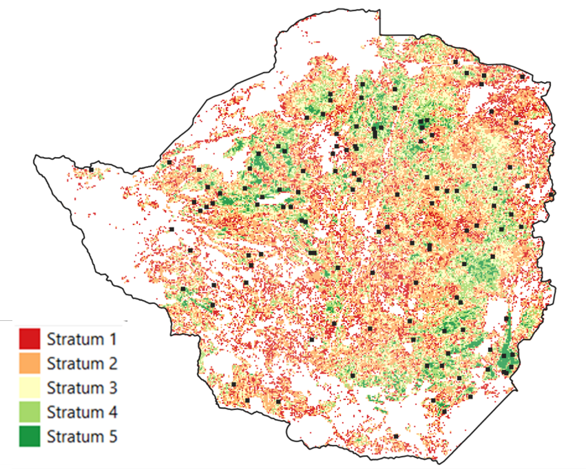
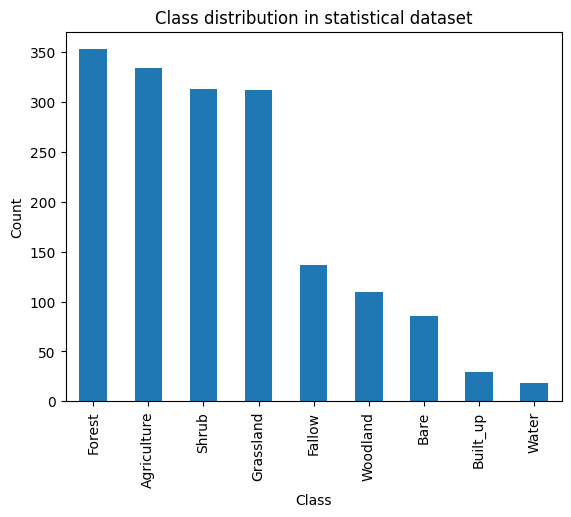
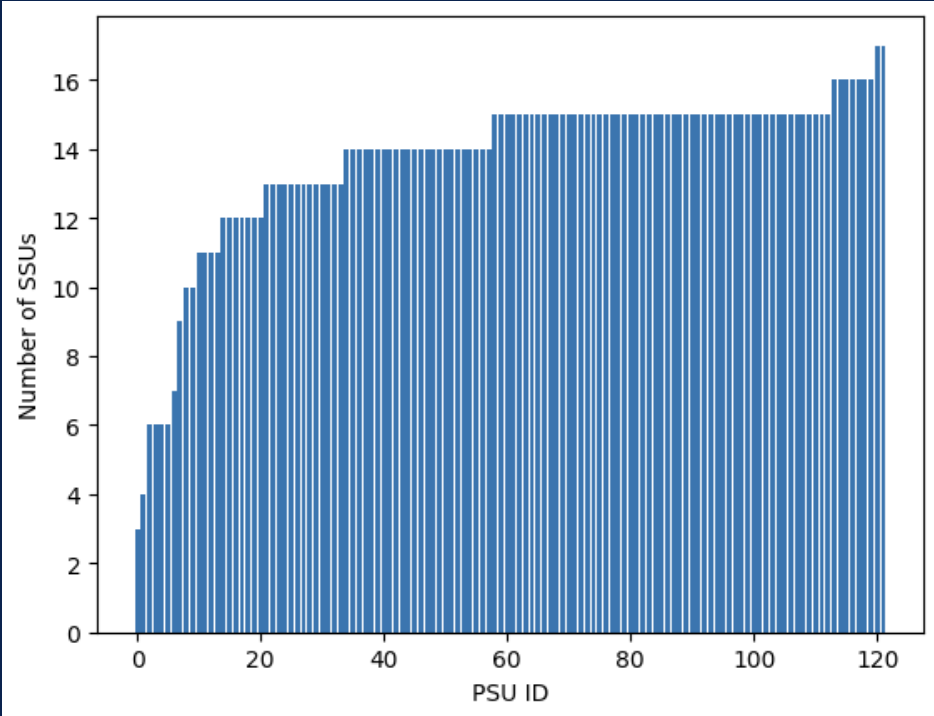
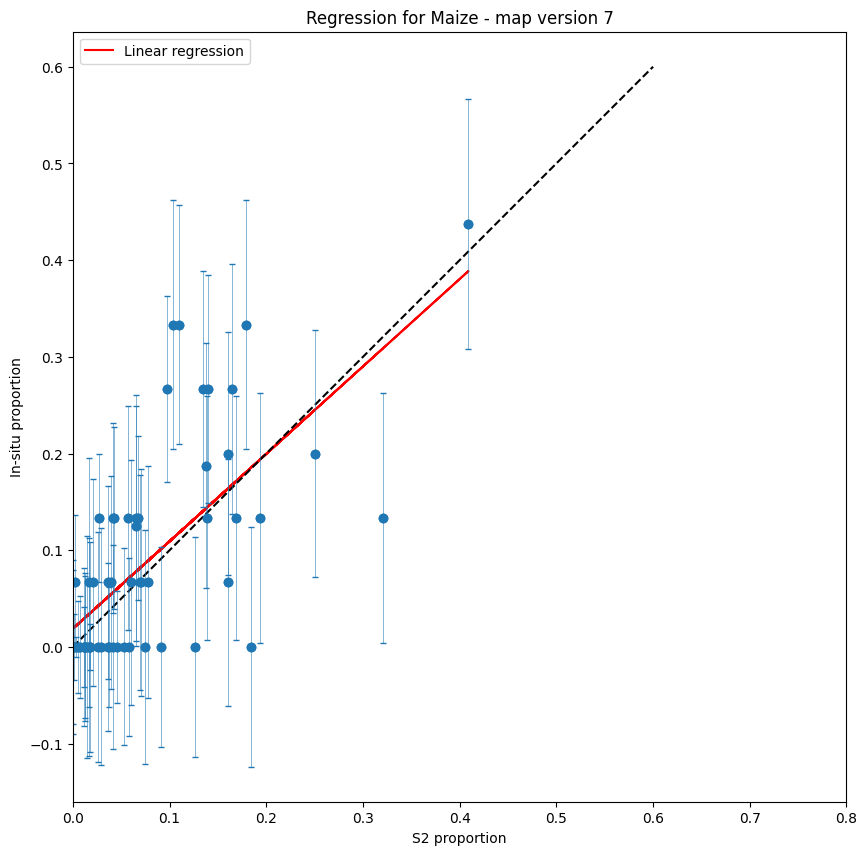
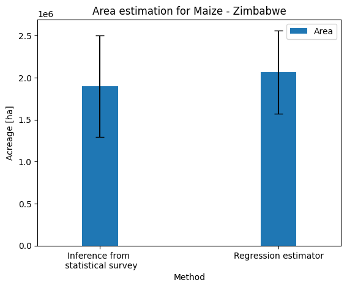

26 Estimating crop statistics using survey-calibrated methods
26.1 Introduction
Producing statistics by counting those pixels classified as a given crop type does not provide unbiased area estimates. Maps are subject to omission and commission errors (Czaplewski, 1992), which are linked to the ability of the classification method to distinguish between classes. Regression estimators and calibration estimators have been widely used to correct such biases [1] [2]. They are traditional ways to combine accurate, possibly unbiased, information, observed on a sample with less accurate, biased information, known for the whole population or for a larger sample. Said differently, maps are used to improve an estimator that has been computed from a ground survey on a sample in preserving as much as possible the properties of the ground survey estimators (unbiasedness) and reducing the variance [1].
This chapter presents an application of such regression approach in Zimbabwe, as implemented in the framework of the EO STAT project.
26.2 Statistical survey
As explained in the Chapter Crop Classification in Zimbabwe, a field campaign was implemented in Zimbabwe in the framework of the FAO EOSTAT project during the summer season 2024, which consisted in two complementary surveys. On one hand, a statistical area frame survey was conducted to obtain a statistically valid acreage estimate of the main crops. On the other hand, an opportunistic windshield survey was designed to acquire as many georeferenced observations as possible across all major land cover and crop types.
The windshield survey has been detailed in the earlier Chapter. Those data were used to generate the national wall-to-wall crop type map from the summer 2024. The statistical survey was implemented using a two-stage stratified area sampling frame, where Primary Sampling Units (PSUs) are sampled from an initial population grid and Secondary Sampling Units (SSUs) are sampled within each PSU. The goal of the survey is to estimate the area proportion of the main crop(s) within PSUs to infer a mean proportion across the whole population grid. Knowing the total area covered by the population grid, the mean proportion estimation can be converted to a total acreage estimation.
Cochran’s formula [3] was used to compute the total number of samples, corresponding to the SSUs:
\[ n = \frac{(\sum{W_iS_i})^2}{[S(\hat{O})^2] + \frac{1}{N}\sum{W_iS_i^2}} \approx{ \left(\frac{\sum{W_iS_i}}{S(\hat{O)}} \right)^2} \] where:
- \(N\) is number of population units in the area of interest
- \(S(\hat{O})\) is the expected standard error of the accuracy estimate, expressed as a proportion
- \(S_i\) is the standard deviation of stratum \(i\)
- \(W_i\) is is the mapped proportion of area of class \(i\)
- \(U_i\) is the expected user accuracy of class \(i\)
Because N is large (over 2397 million pixels), the second term in the denominator of Eq. (1) can be ignored. A standard error for overall accuracy of 0.01 was targeted and user accuracy values ≥ 0.70 were anticipated. The resulting sample size was n = 1836, thus corresponding to SSUs.
We performed a stratification with the aim of dividing the population into internally homogeneous subpopulations in terms of cropping intensity. This stratification was based on the ESA WorldCover map. The proportion of cropland within each PSU was calculated (given by the number of cropland pixels divided by the total number of pixels) and the segments were assigned to one of five strata. The strata limits were defined using the Jenks natural breaks classification method. The Jenks algorithm determines the best arrangement of values to minimize each class's average deviation from the class mean, while maximizing each class's deviation from the means of the other classes. In other words, the method seeks to reduce the variance within classes and maximize the variance between classes. Blocks having an agricultural intensity value less than 2 were dropped, as these represented areas with no agriculture, or with negligible agricultural surfaces. Results of this stratification are shown in Table 26.1.
| Strata | Nb of blocks | Area (ha) | Cropland area (ha) | Agricultural Intensity (%) |
|---|---|---|---|---|
| Stratum 1 | 11291 | 4516400 | 165196.4424 | 3.6 |
| Stratum 2 | 22644 | 9057600 | 938008.2325 | 10.3 |
| Stratum 3 | 14742 | 5896800 | 1305204.32 | 22.1 |
| Stratum 4 | 8390 | 3356000 | 1250339.113 | 37.2 |
| Stratum 5 | 2866 | 1146400 | 683274.7886 | 59.6 |
SSUs are defined as squares of 10 x 10 meters cell size, which corresponds to the size of a single Sentinel-2 pixel. Following recommendations from Stehman [4], an equal number of SSUs was allocated to each stratum. 25 PSUs were randomly selected from each stratum and in the second stage of sample allocation, 15 SSUs were randomly allocated in each PSU resulting in a total of 1875. Figure 26.1 shows the distribution of PSU across the country and across the 5 strata.
26.3 Statistical survey data
The statistical survey was implemented during a 2 week-period in February-March 2024. It was conducted by 4 teams (each team being made of one driver and 2 enumerators). The navigation between the PSUs was facilitated by the Path Finder WebGis application and the Survey 123 application was used to collect georeferenced information for each SSU. The repartition of the classes in the dataset is shown in Figure 26.2.

A data cleaning step was conducted, which resulted in the removal of a significant number of SSUs that did not match the expected collection requirements. The number of SSUs available within each PSUs after this quality control step is displayed in Figure 26.3. This cleaning step, although necessary, decreased the number of SSUs in half the PSUs to less than 15. This will have a significant impact on the error associated to the estimation of the crop proportion within PSUs and therefore on the acreage statistics computation.

26.4 Maize acreage by regression estimator
The statistical survey and the national summer crop type map generated in the FAO EOSTAT project (see Chapter Crop Classification in Zimbabwe) were then used to estimate maize acreage.
First, a statistical inference of the stratified sample was computed. The estimated mean \(Z_{i}\) and total acreage \(\tau_{i}\) of maize within each stratum are given by the following equations.
\[ \hat{\tau_i} = A_i * \hat{z_i} \]
\[ \hat{z_i} = \frac{1}{n_i} * \sum_{j=1}^{n_j} z_i \]
The variance of the acreage estimation within each stratum \(\text{Var}(\tau_{i})\) and total variance are given by equations (4) and (5):
\[ \hat{V}ar(\hat{\tau}) = \sum_{i=1}^H \hat{V}ar(\hat{\tau_i}) \] \[ \hat{V}ar(\hat{\tau_i}) = {A_i}^2 * (1 - \frac{n_i}{N_i}) * \frac{1}{n_i(n_j - 1)} * \sum_{j=1}^{n_j} (z_{ij} - \hat{z_i}) \]
The map then was combined in the estimation process using a regression estimator, combining spatially exhaustive information from the map with unbiased information from the statistical survey through linear regression.
The variance of the regression estimator was computed and is given by
\[ S_{\hat{y}}^2 = \frac{N -n}{N} \left( \frac{s_y^2(1 - r^2)}{n} + \frac{s_y^2(1 - r^2)(\bar{x} - \mu_x)}{(n-1)s_x^2} \right) \] With \(N\) the population size, \(n\) the sample size, \(s_{y}^{2}\) the variance of proportions in the sample in the statistical survey, \(s_{x}^{2}\) the variance in the sample in the map.

Acreage estimates for maize and their 95% confidence intervals for both methods are shown in Figure 26.5.

The variance has slightly improved when integrating the map in the estimation process. However, the decrease is lower than expected and this is mainly due to the error associated with the maize proportions within PSUs (half of the PSUs with less than 15 SSUs – see figure 3). To decrease this uncertainty, only PSUs containing at least 15 SSUs were used in the regression estimator. However, since the variance of the regression estimator depends on the sample size, the removal of half the PSUs from the dataset limited the potential reduction in variance that could have been achieved using remote sensing.
26.5 Lessons learned
This use case demonstrated how EO maps can be combined with a statistical survey to improve the acreage estimation. This was done for maize, which is the dominant summer crop in Zimbabwe. The obtained acreage figure is aligned with the estimation from AGRITEX (Department of Agricultural, Technical and Extension Services, responsible for providing technical support and advice to farmers),which, although unofficial, is one of the most reliable estimates available.
This method has the advantage of being built upon official statistical surveys conducted by the NSOs, thus avoiding questions about the legitimacy of the results. Conversely, it has the drawback of being sensitive to the implementation of these statistical surveys.
First, the protocols need to make sure that georeferenced information is collected at the crop-level (not only at the household-level). This is quite obvious in area frame surveys, but needs some adjustments in case of list frame.
Second, samples need to be correctly allocated, which was probably not the case here. As can be seen on Figure 4, the maximum maize proportion values observed in the statistical survey reach only 0.4, which means that agriculture intensity stratification based on the ESA WorldCover product was not efficient. For the future, the stratification can be based on the EOSTAT summer crop type map, which should bring better results.
Finally, enumerators need to be trained to collect the data of good quality (discuss the quality assessment here).
References
[1]
F. J. Gallego, “Remote sensing and land cover area estimation,” International Journal of Remote Sensing, vol. 25, no. 15, pp. 3019–3047, 2004, doi: 10.1080/01431160310001619607.
[2]
P. Olofsson, G. M. Foody, M. Herold, S. V. Stehman, C. E. Woodcock, and M. A. Wulder, “Good practices for estimating area and assessing accuracy of land change,” Remote Sensing of Environment, vol. 148, pp. 42–57, 2014, doi: https://doi.org/10.1016/j.rse.2014.02.015.
[3]
W. G. Cochran, Sampling techniques. John Wiley & Sons, Ltd, 1977.
[4]
S. V. Stehman, “Impact of sample size allocation when using stratified random sampling to estimate accuracy and area of land-cover change,” Remote Sensing Letters, vol. 3, no. 2, pp. 111–120, 2012, doi: 10.1080/01431161.2010.541950.